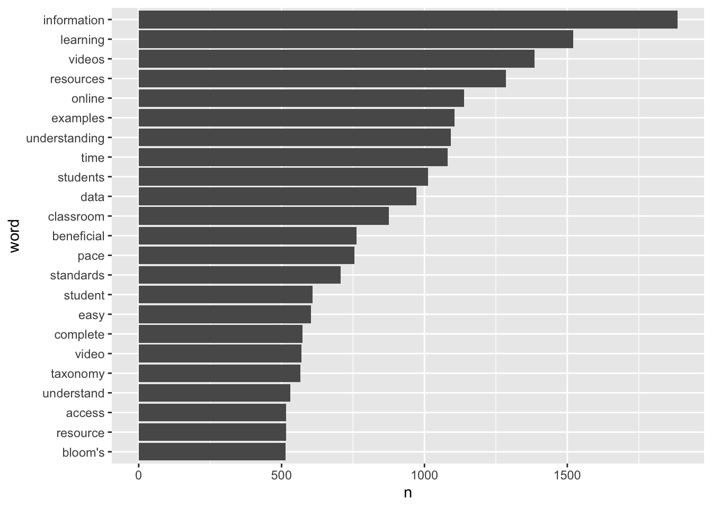
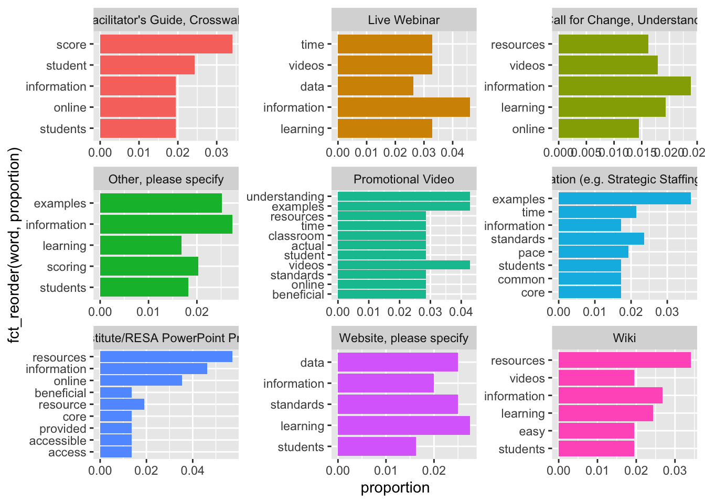
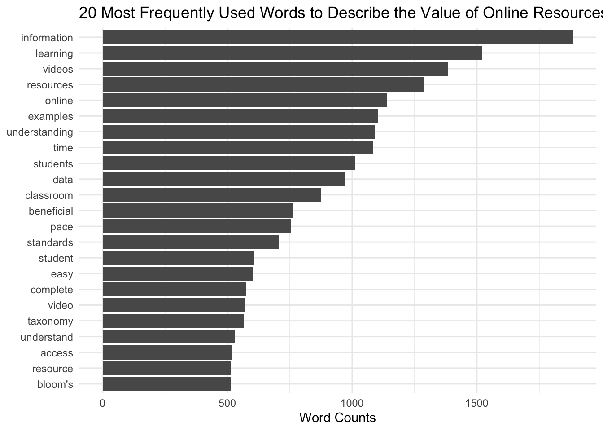

Lab 1: Text Mining Basics - Tidy Text & Word Counts
Author
LASER Institute
Published
July 20, 2024
0. INTRODUCTION
In this case study, we’ll “walkthrough” a basic research workflow, or data analysis process, modeled after the Data-Intensive Research Workflow from Learning Analytics Goes to School (Krumm et al., 2018):
Figure 2.2 Steps of Data-Intensive Research Workflow
Each walkthrough will focus on a basic analysis using text mining techniques that you’ll be expected to reproduce, and apply to a new research question in independent practice, using the provided dataset or a dataset of your own choosing.
We will focus on the analysis of open-ended survey items from an evaluation of the North Carolina Department of Public Instruction (NCDPI) online professional development offered as part of the state’s Race to the Top efforts.
Walkthrough Focus
Our focus will be on getting our text “tidy” so we can perform some basic word counts, look at words that occur at a higher rate in a group of documents, and examine words that are unique to those document groups. Specifically, the walkthrough will cover the following workflow topics:
Prepare: Prior to analysis, it’s critical to understand the context and data sources you’re working with so you can formulate useful and answerable questions. You’ll also need to set up a “Project” for our walkthrough.
Wrangle: Wrangling data entails the work of manipulating, cleaning, transforming, and merging data. In section 2 we focus on reading, reducing, and tidying our data.
Explore: In section 3, we use simple summary statistics, more sophisticated approaches like term frequency-inverse document frequency (tf-idf), and basic data visualization to explore our data and see what insight it provides in response to our question.
1. PREPARE
Prior to analysis, it’s critical to understand the context and data sources available so you can formulate useful questions that can be feasibly addressed by your data. For this section, we’ll focus on the following topics:
Context. We learn a little bit about the North Carolina Race to the Top grant and the evaluation of the online professional development work, including questions and findings from the 2012 report.
Questions. What aspects of online professional development offerings do teachers find most valuable?
Project Setup. We visit Chapter 6 from DSIEUR to set up a Project in RStudio and R script for analysis.
1a. Some Context
RTT Online Professional Development Evaluation
North Carolina was one of 12 recipients of the 2010 federal Race to the Top (RttT) grants, bringing nearly $400 million to the state’s public school system. Over the course of four years, NC’s RttT coordinated a set of activities and policy reforms designed to collectively improve the performances of students, teachers, leaders, and schools.
The North Carolina Race to the Top (RttT) proposal (North Carolina Office of the Governor, 2010) specifies that the state’s Professional Development Initiative will focus on the “use of e-learning tools to meet the professional development needs of teachers, schools, and districts” (p. 191). It points to research demonstrating that “well-designed and -implemented online professional development programs are not only valued by teachers but also positively impact classroom practices and student learning.”
Data Source & Analysis
The evaluation used a wide range of data sources including interviews, document review, site analytics, and surveys, which we’ll focus on for this walkthrough. Survey protocols were designed in cooperation with NCDPI to systematically collect information about local professional development, state-level supports, use of available RttT professional development resources, and organizational and classroom practices in the schools, which will serve as a baseline to assess changes over the period of the North Carolina RttT initiatives.
Quantitative analyses focused primarily on descriptive analysis of item-level responses. In addition, quantitative data from these surveys were analyzed to examine patterns in responses by participants’ role, event type (e.g., module, webinar, resource), and region. Responses to open-ended survey items of the Online Resources Survey were manually coded by their relation to each Learning Forward professional development standard.
Note that the dataset we’ll be using for analysis in this walkthrough is exported as is from Qualtrics with personal identifiers, select demographics, metadata, and closed-ended responses removed.
Summary of Findings
Approximately half of the state’s educators completed at least one online module by the end of the 2011-12 school year. Overall, most participants agreed that the webinars and modules were relevant to their professional development needs, though some content was redundant with prior PD activities and not always content- or grade-specific, and some modules did not meet national standards. Most online modules were completed independently and not in Professional Learning Community groups.
A common theme from focus groups and open-ended survey responses was the convenience of online professional development. One teacher in a focus group stated, “I liked the format. And the way that it was given, it was at your own pace, which works well for our schedules…” Educators also frequently cited that the information and resources provided through the modules improved their understanding of the new standards and the teacher evaluation process. Webinar participants appreciated the useful, updated information presented through a combination of PowerPoint slides and video clips.
While the majority of educators have indicated their satisfaction with these resources, the findings suggest that the use of these resources at both the state and local level was not wholly consistent with national standards for online professional development. Many LEAs likely needed additional guidance, training, support, technology tools, and/or content resources to ensure that local efforts contribute to the quality of the experiences for educators and that the vision for online professional development outlined in the state’s RttT proposal is realized and can be sustained beyond RttT.
1b. Guiding Questions
The State’s progress on designing and implementing online professional development was originally guided by the following (very) general evaluation questions:
State Strategies: To what extent did the state implement and support proposed RttT professional development efforts?
Short-Term Outcomes: What were direct outcomes of state-level RttT professional development efforts?
For this walkthrough, we’ll use text mining to complement prior qualitative analyses conducted as part of the RttT Evaluation by examining responses to open-ended questions on the RttT Online PD Survey administered to over 15,000 NC educators.
Our (very) specific questions of interest for this walkthrough are:
What aspects of online professional development offerings do teachers find most valuable?
How might resources differ in the value they afford teachers?
Finally, one overarching question we’ll explore throughout this lab, and that Silge and Robinson (2018) identify as a central question to text mining and natural language processing, is:
How do we quantify what a document or collection of documents is about?
1c. Set Up a Project
As highlighted in Chapter 6 of Data Science in Education Using R (DSIEUR), one of the first steps of every workflow should be to set up a “Project” within RStudio. This will be your “home” for any files and code used or created in Lab 1. Open RStudio and follow these steps from DESIUR 6.6 to create a Project for Lab 1:
Click on “File”
Select “New Project”
Choose “New Directory”
Click on “New Project”
Enter your Project’s name in the box that says, “Directory name”. Choose a Project name that helps you remember that this is a project is part of Lab 1: Tidy Text & Word Counts. Avoid using spaces in your Project name, and instead, separate words with hyphens or underscore characters.
Choose where to save your Project by clicking on “Browse” next to the box labeled “Create project as a subdirectory of:”. If you are just using this to learn and test out creating a Project, consider placing it in your downloads or another temporary directory so that you remember to remove it later.
Click “Create Project”
Create New File
Now that you have a Project to store .R scripts that you create as you work through this lab, let’s create our first .R script:
Click on “File”
Select “R script”
Click the disk icon or select “Save” from file menu to save.
Enter a file name. See the R Style Guide for standard file naming conventions.
Finally, using your newly created R script, type the following code to load the packages that we’ll be needing for this walkthrough.
# Install necessary librarieslibrary(tidyverse)
── Attaching core tidyverse packages ──────────────────────── tidyverse 2.0.0 ──
✔ dplyr 1.1.4 ✔ readr 2.1.5
✔ forcats 1.0.0 ✔ stringr 1.5.1
✔ ggplot2 3.5.1 ✔ tibble 3.2.1
✔ lubridate 1.9.3 ✔ tidyr 1.3.1
✔ purrr 1.0.2
── Conflicts ────────────────────────────────────────── tidyverse_conflicts() ──
✖ dplyr::filter() masks stats::filter()
✖ dplyr::lag() masks stats::lag()
ℹ Use the conflicted package (<http://conflicted.r-lib.org/>) to force all conflicts to become errors
library(tidytext)
I highly recommend that that you manually type the code shared throughout this walkthrough, for large blocks of text it may be easier to cut and paste.
2. WRANGLE
In general, data wrangling involves some combination of cleaning, reshaping, transforming, and merging data (Wickham & Grolemund, 2017). The importance of data wrangling is difficult to overstate, as it involves the initial steps of going from raw data to a dataset that can be explored and modeled (Krumm et al, 2018).
Reading Data. Before working with data, we need to “read” it into R. It also helps to inspect your data
Data Reduction. We focus on tools from the dplyr package to view, rename, select, slice, and filter our data in preparation for analysis.
Tidy Text. We’ll learn how to use the tidytext package to both “tidy” and tokenize our text in order to create a data frame to use for analysis.
2a. Read, View, Write Data
The Reading Data section introduces the following functions for reading data into R and inspecting it’s contents:
dplyr::read_csv() Reading .csv files into R.
base::print() View your data frame in the Console Pane
utils::view() View your data frame in the Source Pane
tibble::glimpse() Like print, but transposed so you can see all columns
utils::head() View the first 6 rows of your data.
utils::tail() View last 6 rows of your data.
dplyr::write_csv() writing .csv files to directory.
Remember, the name before the double colon indicates the package the function comes from. For example, read_csv comes from the `readr`` package.
Reading Data into R
To get started, we need to import, or “read”, our data into R. The function used to import your data will depend on the file format of the data you are trying to import.
Download the opd_survey.csv file we’ll be using for this Lab from our github.
Create a folder in directory on your computer where you stored your R Project and name it “data”.
Add the file to your data folder.
Check your Files tab in R Studio to verify that your file is indeed in your data folder.
Now let’s read our data into our Environment and assign it to a variable name so we can work with it like any other object in R.
opd_survey <-read_csv("data/opd_survey.csv")
New names:
Rows: 57054 Columns: 19
── Column specification
──────────────────────────────────────────────────────── Delimiter: "," chr
(19): RecordedDate, ResponseId, Role, Q14, Q16...5, Resource...6, Resour...
ℹ Use `spec()` to retrieve the full column specification for this data. ℹ
Specify the column types or set `show_col_types = FALSE` to quiet this message.
• `Q16` -> `Q16...5`
• `Resource` -> `Resource...6`
• `Resource_10_TEXT` -> `Resource_10_TEXT...9`
• `Resource` -> `Resource...10`
• `Resource_10_TEXT` -> `Resource_10_TEXT...11`
• `Q16` -> `Q16...12`
Notice that read_csv() dealt with the issues of duplicate column names for us!!
If you happen to run into issues with data import, RStudio as has an Import Dataset feature for a point and click approach to adding data to your environment.
Viewing Data in RStudio
Once your data is in R, there are many different ways you can view it. Give each of the following at try:
# enter the name of your data frame and view directly in console opd_survey # view your data frame transposed so your can see every column and the first few entriesglimpse(opd_survey) # look at just the first six entrieshead(opd_survey) # or the last six entriestail(opd_survey) # view the names of your variables or columnsnames(opd_survey) # or view in source paneview(opd_survey)
Writing Data to your Project Folder
In addition to reading data from your project folder, you can also write data back to a folder. The readr package has an intuitively named write_csv() function for doing just that.
Using the following code to create a copy of the opd_survey.csv file in your data folder from the opd_survey data frame you created:
write_csv(opd_survey, "data/opd_survey_copy.csv")
Note that the first argument is the data frame you created earlier and the second argument is the file name you plan to give it, including (if necessary) the file path for where it should go.
Comprehension Check
Throughout this walkthrough, you will be asked to respond to questions or short tasks to check your comprehension of the content covered. For section 2a. Read, View, and Write Data, please respond to these questions by commenting out a line or lines in your R script like so:
# 1. What argument would you add to `read_csv()` if my file did not not have column names or headers? # I would need to add the ____ argument and set it to equal ____ to prevent R from setting the first row as column names.
What is the first argument that read_csv() always expects and what happens if you don’t include in quotes?
What package would I need if I wanted to read a Microsoft Excel file into R? Hint: Check the cheat sheet.
What are some of the pros and cons of view() compared to other functions for viewing your data?
What happens if you use write_csv(opd_survey, "opd_survey_copy.csv") and just specify the file name instead including the folder?
What immediate data wrangling issues do you anticipate we’ll have to deal with now that you’ve looked at our data?
2b. Reduce Data
As you’ve probably already noticed from viewing our dataset, we clearly have more data than we need to answer our rather basic research question. For this part of our workflow we focus on the following functions from the dplyr package for wrangling our data:
na.omit() a handy little function from the stats package for removing rows with missing values, i.e. NA.
Subset Columns
To begin, let’s select() Role, Resources (named as Resource…6 in the data frame), and Q21 columns and store as new data frame since those respectively pertain to educator role, OPD resource they are evaluating, and, as illustrated by the second row,
Notice that like the bulk of all tidyverse functions, the first input select() expects is a data frame, followed by the columns you’d like to select.
Let’s take a look at our newly created data frame that should have dramatically fewer variables:
head(opd_selected)
# A tibble: 6 × 3
Role Resource Q21
<chr> <chr> <chr>
1 "What is your role within your school district or organization… "Please… "Wha…
2 "{\"ImportId\":\"QID2\"}" "{\"Imp… "{\"…
3 "Central Office Staff (e.g. Superintendents, Tech Director, Cu… "Summer… <NA>
4 "Central Office Staff (e.g. Superintendents, Tech Director, Cu… "Online… "Glo…
5 "School Support Staff (e.g. Counselors, Technology Facilitator… "Online… <NA>
6 "School Support Staff (e.g. Counselors, Technology Facilitator… "Calend… "com…
Rename Columns
Notice that Q21 is not a terribly informative variable name. Let’s now take our opd_selected data frame and use the rename() function along with the = assignment operator to change the name from Q21 to “text” and save it as opd_renamed.
This naming is somewhat intentional because it not only is it the text we are interested in analyzing, but also mirrors the naming conventions in our [Text Mining with R]https://www.tidytextmining.com/tidytext.html book and will make it easier to follow the examples there.
opd_renamed <-rename(opd_selected, text = Q21)
Subset Rows
Now let’s deal with the legacy rows that Qualtrics outputs by default, which are effectively 3 sets of headers. We will use the slice() function, which is basically the same as the select() function but for rows instead of columns, to carve out those two rows.
opd_sliced <-slice(opd_renamed, -1, -2) # the - sign indicates to NOT keep rows 1 and 2head(opd_sliced)
# A tibble: 6 × 3
Role Resource text
<chr> <chr> <chr>
1 Central Office Staff (e.g. Superintendents, Tech Director, Cur… Summer … <NA>
2 Central Office Staff (e.g. Superintendents, Tech Director, Cur… Online … Glob…
3 School Support Staff (e.g. Counselors, Technology Facilitator,… Online … <NA>
4 School Support Staff (e.g. Counselors, Technology Facilitator,… Calendar comm…
5 Teacher Live We… leve…
6 Teacher Online … None…
Now let’s take our opd_sliced and remove any rows that are missing data, as indicated by an NA.
opd_complete <-na.omit(opd_sliced)
Finally, since we are only interested in the feedback from teachers, let’s also filter our dataset for only participants who indicated their Role as “Teacher”.
opd_teacher <-filter(opd_complete, Role =="Teacher")head(opd_teacher)
# A tibble: 6 × 3
Role Resource text
<chr> <chr> <chr>
1 Teacher Live Webinar "lev…
2 Teacher Online Learning Module (e.g. Call for Change, Understanding the… "Non…
3 Teacher Online Learning Module (e.g. Call for Change, Understanding the… "In …
4 Teacher Online Learning Module (e.g. Call for Change, Understanding the… "Und…
5 Teacher Online Learning Module (e.g. Call for Change, Understanding the… "ove…
6 Teacher Online Learning Module (e.g. Call for Change, Understanding the… "onl…
That was a lot of code we just wrote to end up with opd_teacher. Let’s review:
opd_selected <-select(opd_survey, Role, Resource, Q21)opd_renamed <-rename(opd_selected, text = Q21)opd_sliced <-slice(opd_renamed, -1, -2)opd_complete <-na.omit(opd_sliced)opd_teacher <-filter(opd_complete, Role =="Teacher")
Note that we could have reused opd_teacher and simply overwritten it each time to prevent creating new objects:
opd_teacher <-select(opd_survey, Role, Resource, Q21)opd_teacher <-rename(opd_teacher, text = Q21)opd_teacher <-slice(opd_teacher, -1, -2)opd_teacher <-na.omit(opd_teacher)opd_teacher <-filter(opd_teacher, Role =="Teacher")
# A tibble: 6 × 3
Role Resource text
<chr> <chr> <chr>
1 Teacher Live Webinar "lev…
2 Teacher Online Learning Module (e.g. Call for Change, Understanding the… "Non…
3 Teacher Online Learning Module (e.g. Call for Change, Understanding the… "In …
4 Teacher Online Learning Module (e.g. Call for Change, Understanding the… "Und…
5 Teacher Online Learning Module (e.g. Call for Change, Understanding the… "ove…
6 Teacher Online Learning Module (e.g. Call for Change, Understanding the… "onl…
Our dataset is now ready to be tidied!!!
Comprehension Check
How would you change the code in the Subset Columns section if you wanted to analyze how educators are using the online resources instead of the most beneficial aspects?
How would you rewrite the code in the Subset Rows section if you were interested in looking at School Executive responses instead of teachers?
Rewrite the piped code in the Code Reduction section to prepare a data frame for tidying that includes all Roles, not just teachers, but excludes the Resource column. Assign it to opd_benefits for later use.
2c. Tidy Text
For this part of our workflow we focus on the following functions from the tidytext and dplyr packages respectively:
unnest_tokens() splits a column into tokens
anti_join() returns all rows from x without a match in y.
Tidy Data Principles
Not surprisingly, the Tidyverse set of packages including packages like dplyr adhere “tidy” data principles (Wickham 2014). Tidy data has a specific structure:
Each variable is a column
Each observation is a row
Each type of observational unit is a table
Why would this data be considered “untidy”?
Text data, by it’s very nature is ESPECIALLY untidy. In Chapter 1 of Text Mining with R, Silge and Robinson define the tidy text format as
a table with one-token-per-row. A token is a meaningful unit of text, such as a word, that we are interested in using for analysis, and tokenization is the process of splitting text into tokens. This one-token-per-row structure is in contrast to the ways text is often stored in current analyses, perhaps as strings or in a document-term matrix. For tidy text mining, the token that is stored in each row is most often a single word, but can also be an n-gram, sentence, or paragraph. In the tidytext package, we provide functionality to tokenize by commonly used units of text like these and convert to a one-term-per-row format.
In this section, our goals is to transform our opd_teacher data from this:
# A tibble: 6 × 3
Role Resource text
<chr> <chr> <chr>
1 Teacher Live Webinar "lev…
2 Teacher Online Learning Module (e.g. Call for Change, Understanding the… "Non…
3 Teacher Online Learning Module (e.g. Call for Change, Understanding the… "In …
4 Teacher Online Learning Module (e.g. Call for Change, Understanding the… "Und…
5 Teacher Online Learning Module (e.g. Call for Change, Understanding the… "ove…
6 Teacher Online Learning Module (e.g. Call for Change, Understanding the… "onl…
to this:
# A tibble: 6 × 3
Role Resource word
<chr> <chr> <chr>
1 Teacher Live Webinar leve…
2 Teacher Live Webinar ofqu…
3 Teacher Live Webinar and
4 Teacher Live Webinar revi…
5 Teacher Live Webinar bloo…
6 Teacher Online Learning Module (e.g. Call for Change, Understanding the… none
Tokenize Text
In order to tidy our text, we need to break the text into individual tokens (a process called tokenization) and transform it to a tidy data structure. To do this, we use tidytext’s incredibly powerful unnest_tokens() function.
After all the work we did prepping our data, this is going to feel a little anticlimactic.
Let’s go ahead and tidy our text and save it as opd_tidy:
opd_tidy <-unnest_tokens(opd_teacher, word, text)head(opd_tidy)
# A tibble: 6 × 3
Role Resource word
<chr> <chr> <chr>
1 Teacher Live Webinar leve…
2 Teacher Live Webinar ofqu…
3 Teacher Live Webinar and
4 Teacher Live Webinar revi…
5 Teacher Live Webinar bloo…
6 Teacher Online Learning Module (e.g. Call for Change, Understanding the… none
Note that we also could have just added unnest_tokens(word, text) to our previous piped chain of functions like so:
# A tibble: 6 × 3
Role Resource word
<chr> <chr> <chr>
1 Teacher Live Webinar leve…
2 Teacher Live Webinar ofqu…
3 Teacher Live Webinar and
4 Teacher Live Webinar revi…
5 Teacher Live Webinar bloo…
6 Teacher Online Learning Module (e.g. Call for Change, Understanding the… none
There is A LOT to unpack with this function. First notice that unnest_tokens expects a data frame as the first argument, followed by two column names. The first is an output column name that doesn’t currently exist but will be created as the text is unnested into it (word, in this case). This if followed by the input column that the text comes from which we uncreatively named text. Also notice:
Other columns, such as Role and Resource, are retained.
All punctuation has been removed.
Tokens have been changed to lowercase, which makes them easier to compare or combine with other datasets. However, we can use the to_lower = FALSE argument to turn off this behavior).
Remove Stop Words
One final step in tidying our text is to remove words that don’t add much value to our analysis (at least when using this approach) such as “and”, “the”, “of”, “to” etc. The tidytext package contains a stop_words dataset derived from three different lexicons that we’ll use to remove rows that match words in this dataset.
Let’s take a look at these common stop words so we know what we’re getting rid of from our opd_tidy dataset.
head(stop_words)
# A tibble: 6 × 2
word lexicon
<chr> <chr>
1 a SMART
2 a's SMART
3 able SMART
4 about SMART
5 above SMART
6 according SMART
view(stop_words)
In order to remove these stop words, we will use function called anti_join() that looks for matching values in a specific column from two datasets and returns rows from the original dataset that have no matches. For a good overview of the different dplyr joins see here: https://medium.com/the-codehub/beginners-guide-to-using-joins-in-r-682fc9b1f119
Let’s remove rows from our opd_tidy data frame that contain matches in the word column with those in the stop_words dataset and save it as opd_clean since we were done cleaning our data at this point.
opd_clean <-anti_join(opd_tidy, stop_words)
Joining with `by = join_by(word)`
head(opd_clean)
# A tibble: 6 × 3
Role Resource word
<chr> <chr> <chr>
1 Teacher Live Webinar leve…
2 Teacher Live Webinar ofqu…
3 Teacher Live Webinar revi…
4 Teacher Live Webinar bloo…
5 Teacher Online Learning Module (e.g. Call for Change, Understanding the… modu…
6 Teacher Online Learning Module (e.g. Call for Change, Understanding the… teac…
Comprehension Check
How would you include the anti_join() function in our previous chain that uses the pipe operator? Give it a try and see what happens.
Why do you think the console provided the message “Joining, by = ‘word’”?
How would you use anti_join() if we had named the output column from unnest_tokens() “tokens” instead? Hint: Check ?anti_join documentation.
Tidy your opd_benefits data by tokenizing your text and removing stop words.
3. EXPLORE
As highlighted in both DSEIUR and Learning Analytics Goes to School, calculating summary statistics, data visualization, and feature engineering (the process of creating new variables from a dataset) are a key part of exploratory data analysis. One goal in this phase is explore questions that drove the original analysis and develop new questions and hypotheses to test in later stages. In Section 3, we will calculate some very basic summary statistics from our tidied text, explore key words of interest to gather additional context, and use data visualization to identify patterns and trends that may not be obvious from our tables and numerical summaries. Topics addressed in Section 3 include:
Summary Stats. We focus primarily on the use of word counts and calculating proportions to to help us identify common words used to describe the most valuable aspects of online professional development offerings.
Word Search. We learn about the global regular expression parser, or grep package in R, to search for key words among our data set.
Data Visualization. Finally, we wrap up this walk through by creating wordclouds, bar plots, and small multiple charts to explore patterns and trends that would be difficult to distinguish otherwise.
3a. Summary Stats
Prior to making any data visualization, we revisit our or overarching question guiding most of our efforts in this lab, “How do we quantify what a text is about?”
In this section, we introduce the following functions:
bind_tf_idf() binds the term frequency and inverse document frequency of a tidy text dataset to the dataset
Word Counts
As highlighted in Word Counts are Amazing, one simple but powerful approach to text analysis is counting the frequency in which words occur in a given collection of documents, or corpus.
Now that we have our original survey data in a tidy text format, we can use the count() function from the dplyr package to find the most common words used by teachers when asked, “What was the most beneficial/valuable aspect of this online resource?”
opd_counts <-count(opd_clean, word, sort =TRUE)# alternatively, we could have use the %>% operator to yield the same result.opd_counts <- opd_clean %>%count(word, sort =TRUE)opd_counts
# A tibble: 5,352 × 2
word n
<chr> <int>
1 information 1885
2 learning 1520
3 videos 1385
4 resources 1286
5 online 1139
6 examples 1105
7 understanding 1092
8 time 1082
9 students 1013
10 data 971
# ℹ 5,342 more rows
Going back to findings from the original report, a strategy as simple as basic word counts resulted in key words consistent with findings from the qualitative analysis of focus-group transcripts and open-ended survey responses:
Educators frequently cited that the information and resources provided through the modules improved their understanding of the new standards and the teacher evaluation process.
See also this finding around video clips:
Webinar participants appreciated the useful, updated information presented through a combination of PowerPoint slides and video clips.
One notable distinction between word counts and more traditional qualitative analysis is that broader themes like “convenience” often are not immediately apparent in word counts, but rather emerges from responses containing words like “pace”, “format”, “online”, “ease”, and “access”.
A common theme from focus groups and open-ended survey responses was the convenience of online professional development. One teacher in a focus group stated, “I liked the format. And the way that it was given, it was at your own pace, which works well for our schedules…”
The count() function can also be used with more than one column to count the frequency a word occurs for a select Resource in our dataset.
opd_resource_counts <- opd_clean %>%count(Resource, word, sort =TRUE)view(opd_resource_counts)
In this case, we see that “information” was the most common word for Online Learning Modules but did not even make the top 5 for Recorded Webinar:
Word Frequencies
One common approach to facilitate comparison across documents or groups of text, in our case responses by Online Resource type, is by looking at the frequency that each word occurs among all words for that document group. This also helps to better gauge how prominent the same word is across different groups.
For example, let’s create counts for each Resource and word paring, and then create a new column using the mutate() function that calculations the proportion that word makes up among all words.
To do this a little more efficiently, I’m going to use the %>% operator:
opd_frequencies <- opd_clean %>%count(Resource, word, sort =TRUE) %>%group_by(Resource) %>%mutate(proportion = n /sum(n))opd_frequencies
# A tibble: 7,210 × 4
# Groups: Resource [10]
Resource word n proportion
<chr> <chr> <int> <dbl>
1 Online Learning Module (e.g. Call for Change, Underst… info… 1782 0.0238
2 Online Learning Module (e.g. Call for Change, Underst… lear… 1445 0.0193
3 Online Learning Module (e.g. Call for Change, Underst… vide… 1336 0.0179
4 Online Learning Module (e.g. Call for Change, Underst… reso… 1209 0.0162
5 Online Learning Module (e.g. Call for Change, Underst… onli… 1082 0.0145
6 Online Learning Module (e.g. Call for Change, Underst… unde… 1053 0.0141
7 Online Learning Module (e.g. Call for Change, Underst… time 1036 0.0139
8 Online Learning Module (e.g. Call for Change, Underst… exam… 1025 0.0137
9 Online Learning Module (e.g. Call for Change, Underst… stud… 951 0.0127
10 Online Learning Module (e.g. Call for Change, Underst… data 915 0.0122
# ℹ 7,200 more rows
Using the view() function we can see that “information” makes up about 2.3% of words in responses about the Online Modules, and about 1.7% for Recorded Webinars.
Term Frequency-Inverse Document Frequency
Term frequency-inverse document frequency (tf-idf) is an approach that takes this approach one step further.
The statistic tf-idf is intended to measure how important a word is to a document in a collection (or corpus) of documents, for example, to one novel in a collection of novels or to one website in a collection of websites.
Silge and Robinson note that, “The idea of tf-idf is to find the important words for the content of each document by decreasing the weight for commonly used words and increasing the weight for words that are not used very much in a collection or corpus of document… That is, tf-idf attempts to find the words that are important (i.e., common) in a text, but not too common.”
The tidytext package has a function called bind_tf_idf() that takes a tidy text dataset as input with one row per token (term), per document. One column (word here) contains the terms/tokens, one column contains the documents (book in this case), and the last necessary column contains the counts, how many times each document contains each term (n in this example).
Because tf-idf can account through weighting for “too common” words like “and” or “but”, when calculating tf-idf it is not necessary to remove stop words. However, we will need add a column for total words for each Resource type which can be accomplished in a couple of steps.
First, let’s recycle our opd_teacher data frame and calculate counts for each word again, but this time instead of word counts for the total data set, we’ll calculate word counts for each ‘Resource’.
opd_words <- opd_teacher %>%unnest_tokens(word, text) %>%count(Resource, word, sort =TRUE)head(opd_words)
# A tibble: 6 × 3
Resource word n
<chr> <chr> <int>
1 Online Learning Module (e.g. Call for Change, Understanding the S… the 13058
2 Online Learning Module (e.g. Call for Change, Understanding the S… to 7933
3 Online Learning Module (e.g. Call for Change, Understanding the S… of 6132
4 Online Learning Module (e.g. Call for Change, Understanding the S… and 5560
5 Online Learning Module (e.g. Call for Change, Understanding the S… i 3861
6 Online Learning Module (e.g. Call for Change, Understanding the S… it 3087
Next, let’s calculate the total words per Resource type:
# A tibble: 10 × 2
Resource total
<chr> <int>
1 Calendar 137
2 Document, please specify (i.e. Facilitator's Guide, Crosswalks, Sampl… 500
3 Live Webinar 316
4 Online Learning Module (e.g. Call for Change, Understanding the Stand… 181197
5 Other, please specify 3363
6 Promotional Video 149
7 Recorded Webinar or Presentation (e.g. Strategic Staffing, Standards … 1083
8 Summer Institute/RESA PowerPoint Presentations 883
9 Website, please specify 1860
10 Wiki 1039
Now let’s append the total column from total_words to our opd_words data frame:
opd_totals <-left_join(opd_words, total_words)
Joining with `by = join_by(Resource)`
opd_totals
# A tibble: 8,833 × 4
Resource word n total
<chr> <chr> <int> <int>
1 Online Learning Module (e.g. Call for Change, Understandi… the 13058 181197
2 Online Learning Module (e.g. Call for Change, Understandi… to 7933 181197
3 Online Learning Module (e.g. Call for Change, Understandi… of 6132 181197
4 Online Learning Module (e.g. Call for Change, Understandi… and 5560 181197
5 Online Learning Module (e.g. Call for Change, Understandi… i 3861 181197
6 Online Learning Module (e.g. Call for Change, Understandi… it 3087 181197
7 Online Learning Module (e.g. Call for Change, Understandi… my 2649 181197
8 Online Learning Module (e.g. Call for Change, Understandi… was 2520 181197
9 Online Learning Module (e.g. Call for Change, Understandi… a 2473 181197
10 Online Learning Module (e.g. Call for Change, Understandi… in 2378 181197
# ℹ 8,823 more rows
Finally, we’re ready to use the bind_tf_idf() function to calculate a tf-idf statistic for each word and assess it’s relative importance to a given online resource type:
Notice that idf and thus tf-idf are zero for these extremely common words (typically stop words). These are all words that appear in teacher responses for all online resource types, so the idf term (which will then be the natural log of 1) is zero. The inverse document frequency (and thus tf-idf) is very low (near zero) for words that occur in many of the documents in a collection; this is how this approach decreases the weight for common words. The inverse document frequency will be a higher number for words that occur in fewer of the documents in the collection.
On one final note, while it has proved useful in text mining, search engines, etc., its theoretical foundations are considered less than firm by information theory experts…”
In the next section, we’ll use some data visualization strategies to help us interpret and find patterns in these rather dense output tables.
Comprehension Questions
Looking back at the Word Counts section, what other aspects of the online professional development resources to our word counts suggest teachers find valuable or beneficial?
Instead of using the view() function for opd_resource_counts and searching in the source how, how might you use the filter() function to find return the most common words for Recorded Webinars?
How many total resources were actually evaluated and which resource received the most feedback? How do you know?
What are some obvious limitations to tf-idf, at least for this dataset, based on the initial opd_tf_idf data frame we created?
Calculate word counts, frequencies, and tf-idf for your opd_benefits data frame. For frequencies and tf-idf, group by Role instead of Resource.
What differences, if any, do you notice between teachers and other roles?
3b. Word Search
This section is a really quick aside and primarily meant to introduce the grep package that we’ll be using in future labs.
A quick word count actually resulted in findings fairly consistent with some of the qualitative findings reported, but also lacked some nuance, unsurprisingly, and left some questions about what some of the more frequent words were in reference to.
Let’s use our reduced opd_teacher survey data frame that contains the complete teacher responses and use the handy filter(), select() and grepl() function to select just our text column and filter out responses that contain key words of interest. For example, what aspects of “online” made it beneficial.
We can view all quotes in the source pane, or use the sample_n(), yes from the dplyr package, to select any number of random quotes. In this case 20:
# A tibble: 20 × 1
text
<chr>
1 I was introduced to some valuable online resources.
2 free online resources
3 gaining information about how to teach using technology, common core, and on…
4 Learning about some online resources to use
5 The most beneficial aspect of this online resource examples of grading stude…
6 The most beneficial/valuable aspect of this online resouce is that I can ind…
7 It was online
8 Answer Garden online resource and the online quizzes
9 it was online and easy to access...handy to be reminded of great ways to use…
10 It was beneficial that we could complete CEU's online at our own convienence.
11 I gained knowledge of many valuable classroom resources available online.
12 I really liked the online forum that we had to post a lesson to.
13 It was beneficial online because I could complete it at home when I had time.
14 I don't feel that this online resource was of much value. I feel that there…
15 Was online
16 That it is online and easily accessible through my laptop.
17 online tools described in the Web 2.0 section
18 Own timetable to work in the online environment
19 I appreciated the flexibility of the online format.
20 it was online and could be completed at school or at home
In some cases, we can see that the use of the word “online” was simply repetition of the question prompt, but in other cases we can see that it’s associated with the broader theme of “convenience” as with the quote, “This online resources gave me the opportunity to study on my own time.”
Note that you can also use regular express operators with grep like the * operator to search for word stems. For example using inform* in our search will return quotes with “inform”, “informative”, “information”, etc.
# A tibble: 20 × 1
text
<chr>
1 information presented
2 Great information and resources.
3 The infor,ation was revelant to my classroom needs.
4 Beneficial information
5 Feedback on activities was immediate. I learned valuable information, terma…
6 Information on the 3 types of behavioral issues, and specific information of…
7 This information/webinar will help me to properly assess the MSL for both So…
8 New information about the internet and how search engines work.
9 Valuable information
10 I think the most beneficial was being able to access a time of the day, I co…
11 The student samples provided were good examples for showing how to use the r…
12 I was provided with a sample of what the common exam will look like. There…
13 The information gathering and using section.
14 it was easily accessible with relevant information.
15 Very informative
16 Got right to the information needed, no need for get together activities or …
17 content information
18 informational
19 The videos were full of useful information.
20 informational and to make aware
3c. Data Visualization
The go to package for standard charts and graphs is ggplot2. Hadley Wickham’s R for Data Science and [ggplot2: Elegant Graphics for Data] are also great introductions to data visualization in R with ggplot2.
Word Clouds
The wordcloud2 packages is pretty simple for generating HTML based word clouds.
For example, let’s load our installed wordclouds2 library, and run the wordcloud2() function on our opd_counts data frame:
library(wordcloud2)wordcloud2(opd_counts)
I use wordclouds pretty sparingly in evaluation reports, but typically include them for open ended items in online Qualtrics survey reports to provide education partners I work with a quick snapshot of the response.
Once installed, I recommend using ?wordclouds2 to view the various arguments for cleaning up the default view.
Basic Bar Chart
The bar chart is the workhorse for data viz and is pretty effective for comparing two or more values. Given the unique aspect of our tidy text data frame, however, we are looking at upwards of over 5,000 values (i.e. words and their counts) to compare with our opd_counts data frame and will need some way to limit the number of words to display.
opd_counts %>%filter(n >500) %>%# keep rows with word counts greater than 500mutate(word =reorder(word, n)) %>%#reorder the word variable by n and replace with new variable called wordggplot(aes(n, word)) +# create a plot with n on x axis and word on y axisgeom_col() # make it a bar plot

Small Multiples
Word clouds and bar charts are pretty effective for highlighting the most common words in an entire corpus, or in our case, all teacher survey responses, regardless of resource type being reviewed.
One limitation we ran into earlier when we started looking at word frequencies and tf-idf stats was that it was difficult to easily compare the most common or unique words for each resource type. That is where small multiples come. A small multiple is basically a series of similar graphs or charts using the same scale and axes that make it easier to compare across different document collections of interest, in our case, word counts by resource type.
Let’s use the example illustrated in Text Mining with R to create a small multiple for our opd_frequencies data set instead of the opd_tf_idf
library(forcats)opd_frequencies %>%filter(Resource !="Calendar") %>%# remove Calendar responses, too few. group_by(Resource) %>%slice_max(proportion, n =5) %>%ungroup() %>%ggplot(aes(proportion, fct_reorder(word, proportion), fill = Resource)) +geom_col(show.legend =FALSE) +facet_wrap(~Resource, ncol =3, scales ="free")

Comprehension Check
Create a word cloud, bar chart, and/or small multiple using your opd_benefits data.
4. MODEL
As highlighted in Chapter 3 of Data Science in Education Using R, the Model step of the data science process entails “using statistical models, from simple to complex, to understand trends and patterns in the data.” The authors note that while descriptive statistics and data visualization during the Explore step can help us to identify patterns and relationships in our data, statistical models can be used to help us determine if relationships, patterns and trends are actually meaningful.
In Learning Analytics Goes to School, the authors describe modeling as simply developing a mathematical summary of a dataset and note that there are two general types to modeling: unsupervised and supervised learning. Unsupervised learning algorithms, which will be the focus in this lab, are used to explore the structure of a dataset, while supervised models “help to quantify relationships between features and a known outcome.”
We will explore the use of models for text mining in future labs, but if you are interested in looking ahead to see how they might be applied to text as data, I recommend taking a look at Chapter 6 Topic Modeling from Text Mining with R: A Tidy Approach. Chris Bail in his Text as Data course also provides a nice introduction to Topic Modeling, including Structural Topic Modeling, which we will explore using the stm package in future labs.
Finally, if you have not already done so, I ask that at minimum you read Chapter 3 of DSIEUR as well as the section on the Data-Intensive Research Workflow from Chapter 2 of Learning Analytics Goes to school.
5. COMMUNICATE
The final(ish) step in our workflow/process is sharing the results of analysis with wider audience. Krumm et al. (2018) have outline the following 3-step process for communicating with education stakeholders what you have learned through analysis:
Select. Communicating what one has learned involves selecting among those analyses that are most important and most useful to an intended audience, as well as selecting a form for displaying that information, such as a graph or table in static or interactive form, i.e. a “data product.”
Polish. After creating initial versions of data products, research teams often spend time refining or polishing them, by adding or editing titles, labels, and notations and by working with colors and shapes to highlight key points.
Narrate. Writing a narrative to accompany the data products involves, at a minimum, pairing a data product with its related research question, describing how best to interpret the data product, and explaining the ways in which the data product helps answer the research question.
In this particular walkthrough, our target audience is developers of online professional learning opportunities who are looking to receive feedback on what’s working well and potential areas for improvement. This lets us assume a good deal of prior knowledge on their end about the context of the evaluation, a high level of familiarly with the online professional development resources being assessed, and fairly literate at reading and interpreting data and charts. This also lets us simplify our data products and narrative and reduce the level of detail needed to communicate useful information.
For summative evaluation, typically at the end of a school year or grant period when the emphasis is on assessing program outcomes and impact, our audience would extend to those less familiar with the program but with a vested interest in program’s success, such as the NC State Board of Education or those directly impacted by the program including NC educators is general. In that case, our data product would need to include much more narrative to provide context and greater detail in charts and graphs in order to help interpret the data presented.
5a. Select
Analyses
For analyses to present, I’m going to focus primarily on:
Word Counts. One of the first things I’ll share with my audience is my analysis of word counts since these are very easy to interpret and will provide online PD developers with some instant insight.
Word Search. I also think it’s important to include some actual participant responses for select key words in order to provide additional information about how those words are being used on context. I may handpick some select quotes or present a random selection of quotes.
TF-IDF. Finally, as a way to potentially help them weed through words unique to specific resources, as well as potentially identify some areas for potential follow-up and to dig deeper, I’ll discuss
I’ve decided to exclude analyses of just term frequency because I feel like simply counts are easier to quickly interpret while tf-idf provides more nuance. I also want to be careful not to overwhelm my audience.
Data Products
In terms of “data products” and form, and because this is a simple demonstration for sharing analyses and our first experience in this lab with independently analysis, I’ll prepare my data product as a basic slide show that includes the following charts:
Word Cloud. This is really as much decorative as it is a means to communicate key findings. I’ll probably include this on my title slide as a way to immediately engage my audience and provide a preview of findings I’ll share. It’s also a way to include common words that may not make the cut in my bar chart.
Bar Chart. I’ll definitely share with them the bar chart I created earlier as a means to focus on the most common words used by teachers across all resources. Also, this is a little less busy than a word cloud and allows them to quickly see the top words in order.
Quotes. As noted above, I also feel it’s important to provide some participants responses that help explain how the common words are being used in context.
Small Multiples. Although at this point a little skeptical about how meaningful the tf-idf analysis was due to issues such as spelling as well as the limited number of responses for many resources, I think the small multiples chart will help to spark discussion among PD developers about specific aspects of each resource type that teachers’ value.
Sharing Format
We’ll be using R Markdown to create a slide deck or short report that documents our independent analysis. R Markdown files can also be used to create a wide range of outputs and formats, including polished PDF or Word documents, websites, web apps, journal articles, online books, interactive tutorials and more. And to make this process even more user-friendly, R Studio now includes a visual editor! This lets you create R Markdown files like you would with a standard word processing tool.
An additional advantage of R Markdown compared to the alternative of copying and pasting tables and charts created from an R script to Word or PowerPoint is that you can embed your R code directly in your R Markdown file making it easy to updated your charts as needed and share your R Markdown file with others so they can inspect your code and reproduce your analysis, i.e. reproducible research.
5b. Polish
Word Cloud
To make the word cloud a little less busy and a little more useful, I removed the multitude of colors from the default setting, and using some modified code form the ?wordclouds2 help file, I’ve included an argument in the wordclouds2( ) function to use the color black for words that occur more than 1000 times, and gray for the rest.
For my bar chart, I did some minor clean up, including editing the x-axis title, removing the redundant y axis by setting it to NULL, and adding a title. I also used the built-in theme_minimal( ) function layer to simplify the look. If this were something for a more formal report, I’d probably finesse it even more, but it gets the point across.
opd_counts %>%filter(n >500) %>%mutate(word =reorder(word, n)) %>%ggplot(aes(n, word)) +geom_col() +labs(x ="Word Counts", y =NULL, title ="20 Most Frequently Used Words to Describe the Value of Online Resources") +theme_minimal()

Small Multiples
Finally, two related issues that I want to clean up a little with respect to tf-idf before sharing with an outside audience are the appearance of stop words and too few responses for the Calendar online learning resources.
First, I’ll reuse my opd_clean data frame which had my stop words removed to create my new opd_tf_idf data frame.
Then I’ll use the filter() function to remove any response pertaining to Calendar and add some labels using the labs() function. Again, if this were a chart destined for a more formal report, I’d also clean up the Resource names to make them more readable and fit properly on each bar plot.
Finally, with the help of Soraya Campbell, I’ve fixed the pesky issue with the charts not ordering by tf-idf value properly by changing Resource from a character to a factor and using the reorder_within function.
opd_tf_idf %>%filter(Resource !="Calendar") %>%group_by(Resource) %>%slice_max(tf_idf, n =5) %>%ungroup() %>%mutate(Resource=as.factor(Resource),word=reorder_within(word, tf_idf, Resource)) %>%ggplot(aes(word, tf_idf, fill = Resource)) +geom_col(show.legend =FALSE) +facet_wrap(~Resource, ncol =3, scales ="free") +coord_flip() +scale_x_reordered() +labs(title ="Words Unique to Each Online Learning Resurcecs", x ="tf-idf value", y =NULL)